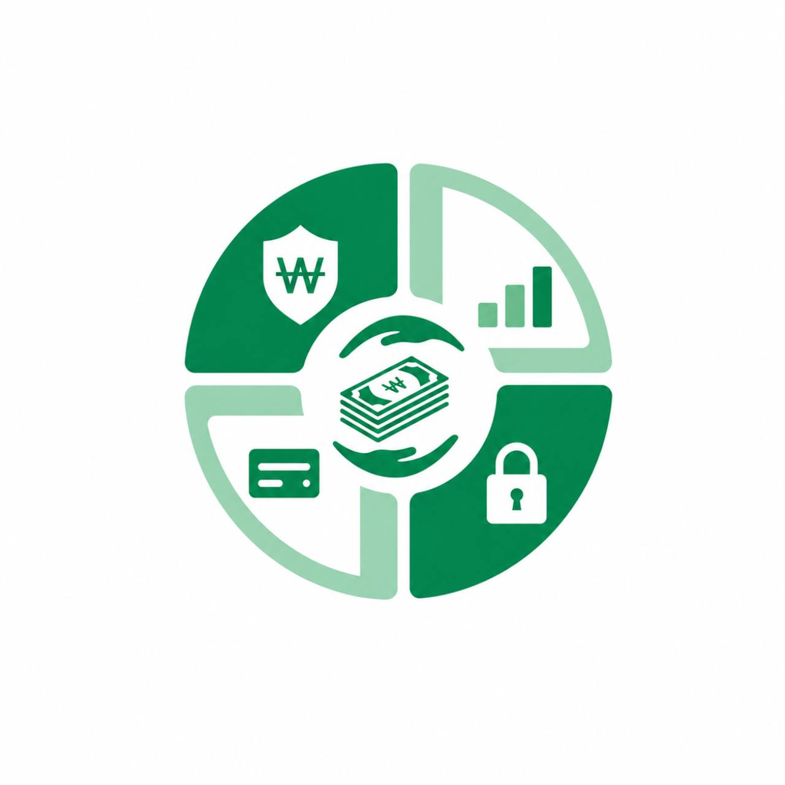
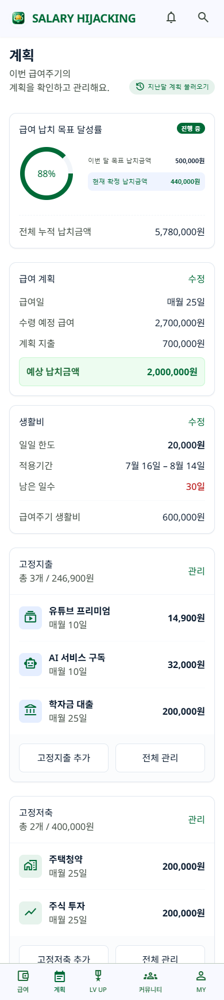
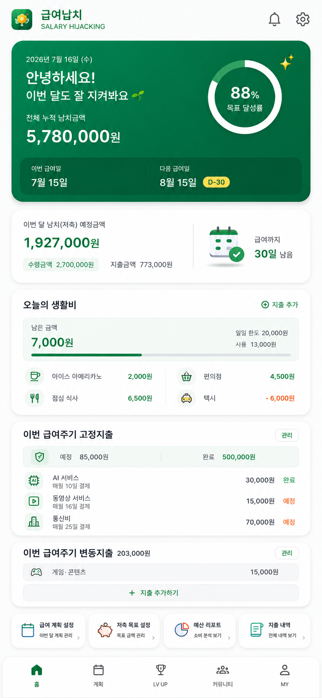
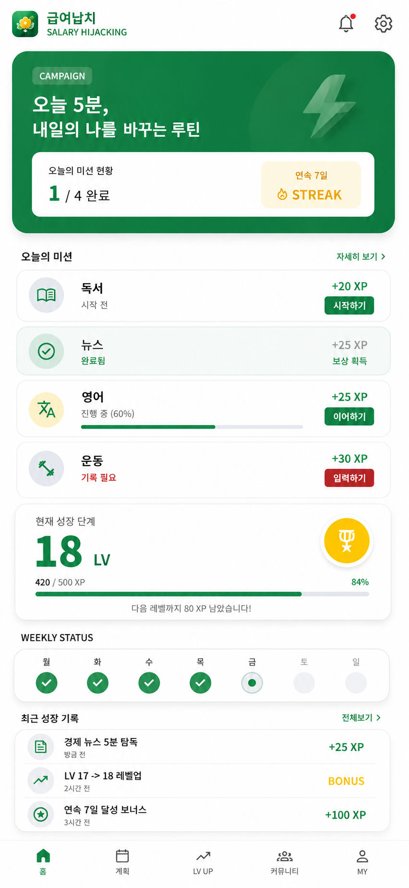
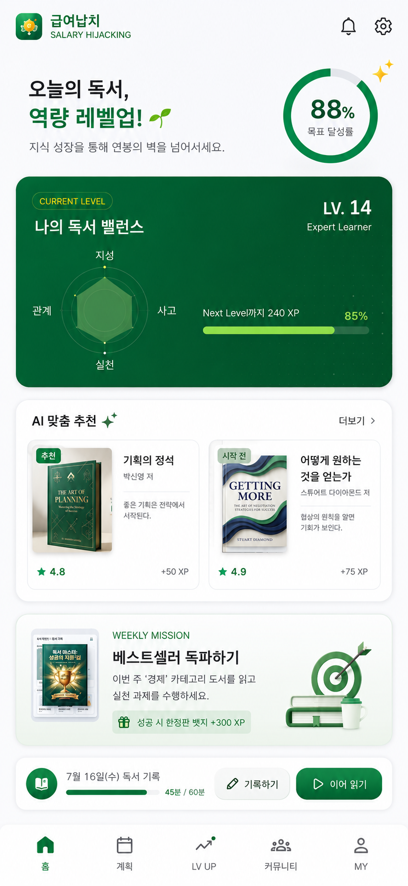
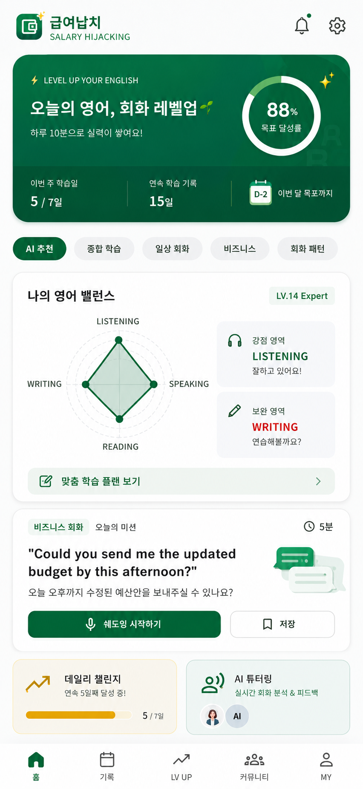
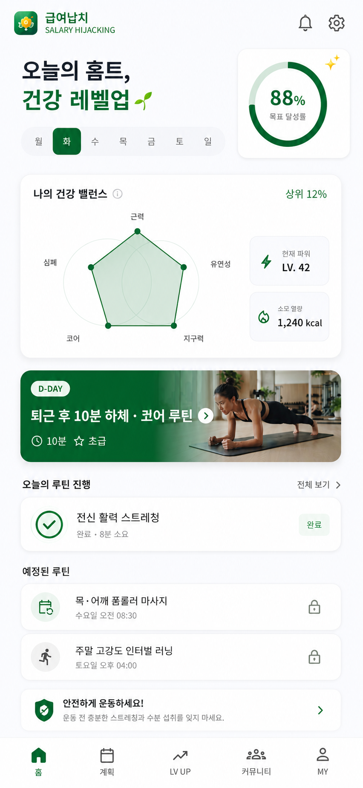
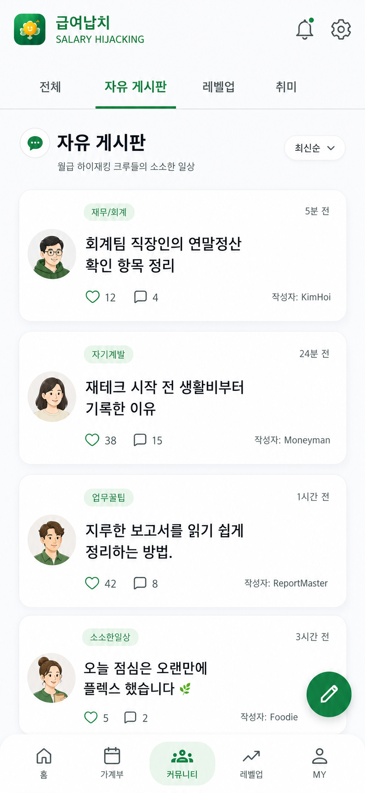
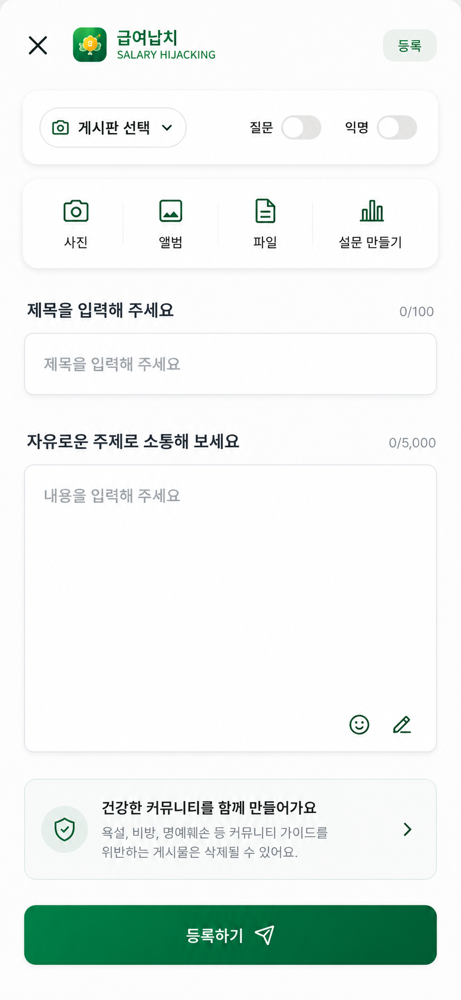

“월급이 들어오면 먼저 쓸 곳과 지킬 돈을 나누고, 오늘의 한도를 확인한다.”
소비가 끝난 뒤 후회하는 대신, 급여주기 시작부터 계획하고 매일 남은 금액을 보며 행동을 바꾸는 것이 급여납치의 핵심입니다.

급여납치는 소비 후에 기록하는 가계부를 넘어, 급여를 받기 전후에 고정지출·저축·생활비를 먼저 나누고 오늘 쓸 수 있는 돈을 확인하며 “이번 월급에서 내가 지켜낸 돈”을 성과로 보여주는 급여 자기관리 앱입니다.



직접 돈의 흐름을 확인하고 관리해야 돈이 새지 않습니다. 급여납치는 “얼마를 썼는가?”보다 “이번 월급에서 얼마를 지켜냈는가?”를 먼저 묻습니다.
“월급이 들어오면 먼저 쓸 곳과 지킬 돈을 나누고, 오늘의 한도를 확인한다.”
소비가 끝난 뒤 후회하는 대신, 급여주기 시작부터 계획하고 매일 남은 금액을 보며 행동을 바꾸는 것이 급여납치의 핵심입니다.
고정비·구독·생활비·저축이 한 통장 안에서 섞이면 실제로 쓸 수 있는 돈을 착각하기 쉽습니다.
급여납치는 지출 내역만 쌓지 않고, 오늘 남은 금액과 목표 달성 상태를 행동 직전에 보여줍니다.
LV UP 미션과 커뮤니티 인증을 결합해 재무 습관과 자기계발 습관을 함께 이어갈 수 있게 설계했습니다.
급여등록 → 고정지출/저축 계획 → 일일예산 → 변동지출 → 지켜낸 돈 확인. 한 번의 흐름으로 내 월급을 관리합니다.
수령액·반영 지출·저축과 계획을 기준으로 핵심 성과를 서버에서 계산해 가장 먼저 보여줍니다.
달력의 1일부터가 아니라 실제 급여일을 기준으로 이번 급여주기와 다음 급여일까지의 흐름을 봅니다.
구독·대출·자동결제와 적금·청약·투자 계획을 생활비와 분리해 월급이 어디로 갈지 먼저 정합니다.
일일예산과 실제 지출을 비교해 남은 금액과 초과 상태를 즉시 확인합니다.
식사·쇼핑·교통 등 당일 지출을 빠르게 추가하고 급여 홈과 일일예산에 즉시 반영합니다.
한 달의 결과를 끝내지 않고 누적 지켜낸 돈과 목표 달성률로 꾸준한 돈 관리 성과를 확인합니다.
급여납치의 화면은 “수치를 많이 보여주는 것”보다 “지금 무엇을 확인하고 무엇을 해야 하는지”가 바로 보이도록 구성합니다.
독서·뉴스·영어·운동을 매일 작은 미션으로 이어가고 XP, 레벨, 스트릭으로 꾸준함을 눈에 보이는 성장으로 바꿉니다.





돈 관리와 자기계발을 혼자 버티는 일이 되지 않도록 관심사 게시판과 레벨업 인증, 질문, 자유로운 이야기를 연결합니다.
신고·차단·숨김·운영 모더레이션을 함께 두어 참여와 안전을 동시에 관리합니다.
급여·예산·지출·저축처럼 민감한 금융 성격의 데이터는 기능보다 먼저 신뢰의 기준을 세웁니다.
핵심 금액과 급여주기 판정은 클라이언트 화면이 아니라 서버 데이터와 검증된 계산 규칙을 기준으로 처리합니다.
급여액·지출액·저축액·부채 등 금융 원문을 개인별 광고 타겟팅에 사용하지 않는 것을 제품 원칙으로 둡니다.
비밀번호·인증 토큰·푸시 토큰·민감 금융 원문을 로그나 분석 데이터에 불필요하게 남기지 않습니다.
동의 관리, 개인정보 내보내기, 고객지원, 탈퇴 처리 등 계정과 개인정보 생애주기를 서비스 흐름 안에서 제공합니다.
급여납치의 제휴 영역은 핵심 급여·예산 흐름을 방해하지 않고, 광고·제휴임을 명확히 표시하며 문맥형 안내를 기본으로 합니다.
급여계획부터 오늘의 예산, 지출, 저축, 성장 루틴, 커뮤니티까지. 급여납치는 월급 생활을 한 흐름으로 관리하는 플랫폼을 지향합니다.
처음부터 다시 보기